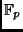
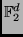
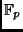
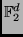

Next: Applications
Up: On the implementation of
Previous: On the implementation of
The Advanced Encryption Standard (AES) specifies a FIPS-approved (cf. [FIPS])
cryptographic algorithm that is used to safely protect electronic data.
The AES algorithm is a symmetric block cipher that is able to encrypt (encipher) and
decrypt (decipher) electronic data. The AES algorithm is capable of using cryptographic keys of
128, 192, and 256 bits to encrypt and decrypt data blocks of 128 bits.
The new AES (also known as Rijndael, cf. [DR2]) is an algorithm designed to use only single byte operations.
Therefore, it is an algorithm very suitable for 8-bit  -processors with only a few kB RAM as commonly used in
todays´ smart cards. However, Rijndael is also well suited for 32-bit -processors with more RAM and clearly
for dedicated hardware implementations, cf. [Wo,WOL,SMTM]. An optimized implementation of the AES algorithm on an 8051 based
-controller with a 128-bit key takes less than 1ms @ 15MHz and requires 48 bytes of directly addressable
internal RAM to encrypt a 128 bit data block and a little bit more time to decrypt it. Even if this is
enough for a large variety of applications, there are some others where the bit rate achieved with this
implementation may not be enough (for instance in a contactless environment) or, there is a demand for
a high physical attack resistancy.
On the other hand, dedicated public-key coprocessors are fast arithmetic coprocessors that usually can
handle non-modular and especially modular arithmetic on prime fields
 and especially on fields of
characteristic two
, cf. [NR]. These coprocessors are designed to be very efficient for RSA and
ECC algorithms, but they are clearly not intended to accelerate the computation of symmetric key algorithms
like DES or AES.
However, some of the operations usually implemented in a modular arithmetic coprocessor,
specifically in those intended for elliptic curve cryptography, are still useful to
implement the AES because some transformations of the AES are performed on a field
.
By performing these transformations within the coprocessor, we can reduce the execution
time of the encryption and decryption algorithms, reduce the usage of internal RAM memory
and protect the algorithm against various side-channel attacks [A,AK1,AK2,CJRR,CKN,DR1,DPV,Gu1,Gu2,KK,Koca],
such like timing attacks [KQ,Koch],
power attacks [AG,BS99,CCD,KJJ,Me],
electromagnetic radiation attacks [SQ] or
even fault attacks [ABFHS,BDL,BDHJNT,BS97,BS02,BMM,JLQ,JPY,JQBD,JQYY,KR,KWMK,Ma,Pai,SA,YJ,YKLM1,YKLM2,ZM].
Although many implementations of Rijndael have been brought into the literature,
since this algorithm has won the AES contest,
none of these implementations so far used a public-key crypto-coprocessor.
Therefore, we cannot compare our implementation with any other,
and we recommend to look at cf. [Li] to get an overview of alternative implementations on other platforms.
In the course of this paper we first give some hints of the utility of our implementation
in many smart card applications. In the next chapter we describe the minimum requirements
for the needed coprocessor and give an example of its required architecture. Hereafter,
we briefly describe the AES itself. The following chapter is the most important one,
as it describes our proposed implementation technique used for the AES.
Finally, some security considerations are discussed around the implementation presented here and
some estimation figures on the performance of the implementation are also given.
-processors with only a few kB RAM as commonly used in
todays´ smart cards. However, Rijndael is also well suited for 32-bit -processors with more RAM and clearly
for dedicated hardware implementations, cf. [Wo,WOL,SMTM]. An optimized implementation of the AES algorithm on an 8051 based
-controller with a 128-bit key takes less than 1ms @ 15MHz and requires 48 bytes of directly addressable
internal RAM to encrypt a 128 bit data block and a little bit more time to decrypt it. Even if this is
enough for a large variety of applications, there are some others where the bit rate achieved with this
implementation may not be enough (for instance in a contactless environment) or, there is a demand for
a high physical attack resistancy.
On the other hand, dedicated public-key coprocessors are fast arithmetic coprocessors that usually can
handle non-modular and especially modular arithmetic on prime fields
 and especially on fields of
characteristic two
, cf. [NR]. These coprocessors are designed to be very efficient for RSA and
ECC algorithms, but they are clearly not intended to accelerate the computation of symmetric key algorithms
like DES or AES.
However, some of the operations usually implemented in a modular arithmetic coprocessor,
specifically in those intended for elliptic curve cryptography, are still useful to
implement the AES because some transformations of the AES are performed on a field
.
By performing these transformations within the coprocessor, we can reduce the execution
time of the encryption and decryption algorithms, reduce the usage of internal RAM memory
and protect the algorithm against various side-channel attacks [A,AK1,AK2,CJRR,CKN,DR1,DPV,Gu1,Gu2,KK,Koca],
such like timing attacks [KQ,Koch],
power attacks [AG,BS99,CCD,KJJ,Me],
electromagnetic radiation attacks [SQ] or
even fault attacks [ABFHS,BDL,BDHJNT,BS97,BS02,BMM,JLQ,JPY,JQBD,JQYY,KR,KWMK,Ma,Pai,SA,YJ,YKLM1,YKLM2,ZM].
Although many implementations of Rijndael have been brought into the literature,
since this algorithm has won the AES contest,
none of these implementations so far used a public-key crypto-coprocessor.
Therefore, we cannot compare our implementation with any other,
and we recommend to look at cf. [Li] to get an overview of alternative implementations on other platforms.
In the course of this paper we first give some hints of the utility of our implementation
in many smart card applications. In the next chapter we describe the minimum requirements
for the needed coprocessor and give an example of its required architecture. Hereafter,
we briefly describe the AES itself. The following chapter is the most important one,
as it describes our proposed implementation technique used for the AES.
Finally, some security considerations are discussed around the implementation presented here and
some estimation figures on the performance of the implementation are also given.
Next: Applications
Up: On the implementation of
Previous: On the implementation of
Roger Fischlin
2002-09-25